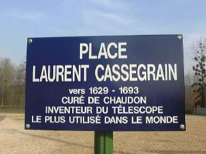

|
|
Un curé qui voyait loin!
Laurent Cassegrain, contemporain de Newton |
 Place face à l'église
|
Le 25 avril 1672, un certain M. de Bercé faisait par le " journal des Sçavans " qui était à l'époque l'organe de l'Académie des sciences récemment créée par Louis XIV, deux communications. Il transmettait tout d'abord une lettre écrite de Chartres par un dénommé Cassegrain qui donnait les proportions des " trompettes à parler de loin " qu'il avait calculées. Et M. de Bercé ne pouvait s'empêcher de mentionner aussi que le même Cassegrain lui avait fait parvenir quelques mois auparavant le shéma d'un télescope, et de faire savoir qu'il trouvait le projet de Cassegrain beaucoup plus spirituel que celui que Newton venait de publier. Le " Cassegrain " c'est le télescope Cassegrain,Combinaison d'un grand miroir primaire parabolique concave troué en son milieu, et d'un petit miroir secondaire hyperbolique convexe. Chez les astronomes amateurs, c'est la combinaison la plus utilisée de nos jours.
|
Ce sont de nombreuses archives patiemment consultées par Mme Françoise Launay, ingénieur au CNRS, qui ont permis de découvrir qui se cachait derrière ce patronyme . Prêtre et Professeur : La lecture de centaines d'actes de baptêmes, de mariage, de décès, a fait revivre ce Laurent Cassegrain, prêtre et professeur au collège Pocquet de Chartres. Le livre de l'abbé Beauhaire, du XIX siècle recense tous les ecclésiastiques du diocèse et mentionne un certain Laurent Cassegrain curé de Chaudon de 1685 à 1693. La confrontation des signatures du professeur du collège Pocquet et du curé de Chaudon, a autorisé à penser que c'était le même homme. |
|